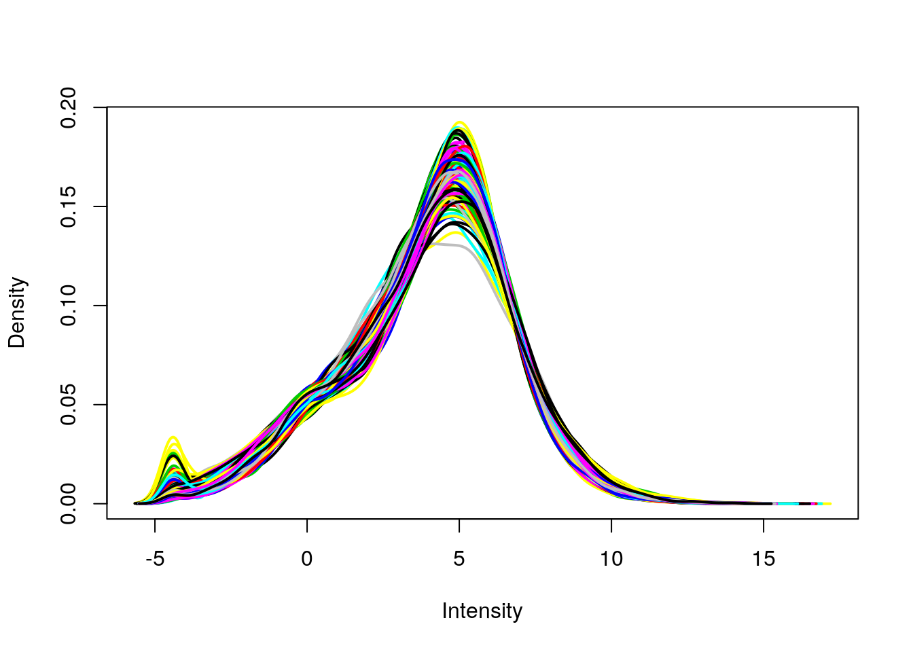
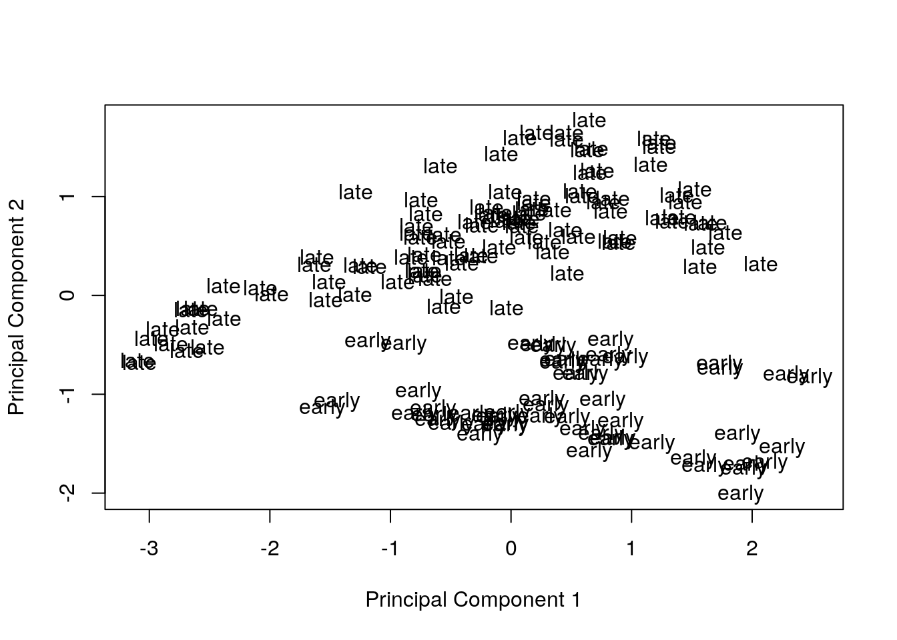
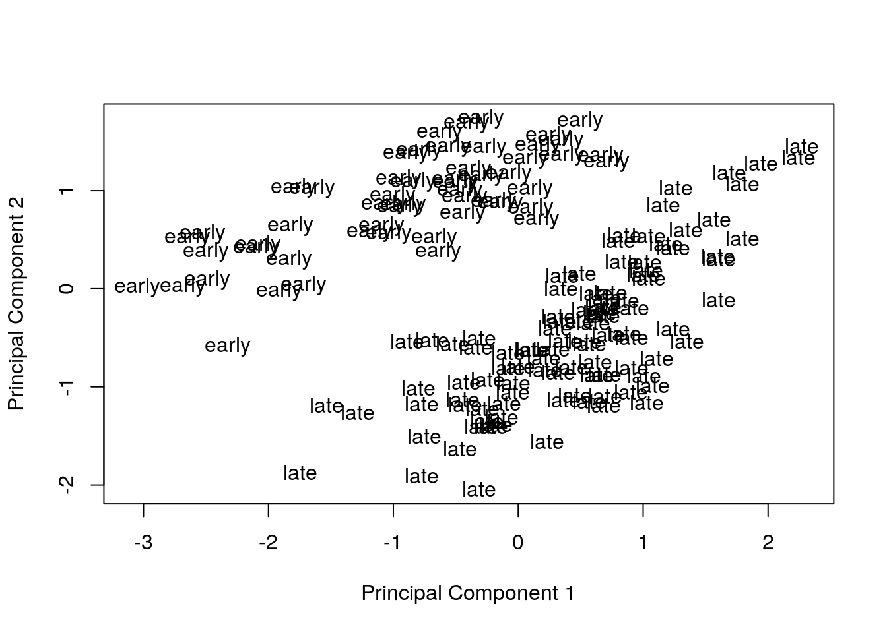

Last updated: 2018-08-20
workflowr checks: (Click a bullet for more information) ✔ R Markdown file: up-to-date
Great! Since the R Markdown file has been committed to the Git repository, you know the exact version of the code that produced these results.
✔ Environment: empty
Great job! The global environment was empty. Objects defined in the global environment can affect the analysis in your R Markdown file in unknown ways. For reproduciblity it’s best to always run the code in an empty environment.
✔ Seed:
set.seed(12345)
The command set.seed(12345) was run prior to running the code in the R Markdown file. Setting a seed ensures that any results that rely on randomness, e.g. subsampling or permutations, are reproducible.
✔ Session information: recorded
Great job! Recording the operating system, R version, and package versions is critical for reproducibility.
✔ Repository version: fcc513c
wflow_publish or wflow_git_commit). workflowr only checks the R Markdown file, but you know if there are other scripts or data files that it depends on. Below is the status of the Git repository when the results were generated:
Ignored files:
Ignored: .Rhistory
Ignored: .Rproj.user/
Untracked files:
Untracked: code/counts_per_sample.txt
Untracked: code/table-s1.txt
An example of diagnosing and correcting batch effects from one of my own studies on the response to infection with Mycobacterium tuberculosis (paper, code, data).
library(dplyr)
library(limma)
library(edgeR)
# Have to load Biobase after dplyr so that exprs function works
library(Biobase)Download data.
file_url <- "https://bitbucket.org/jdblischak/tb-data/raw/bc0f64292eb8c42a372b3a2d50e3d871c70c202e/counts_per_sample.txt"
full <- read.delim(file_url, stringsAsFactors = FALSE)Convert to ExpressionSet.
dim(full)[1] 156 19419full <- full[order(full$dir), ]
rownames(full) <- paste(full$ind, full$bact, full$time, sep = ".")
x <- t(full[, grep("ENSG", colnames(full))])
p <- full %>% select(ind, bact, time, extr, rin)
stopifnot(colnames(x) == rownames(p))
eset <- ExpressionSet(assayData = x,
phenoData = AnnotatedDataFrame(p))Filter lowly expressed genes.
keep <- rowSums(cpm(exprs(eset)) > 1) > 6
sum(keep)[1] 12728eset <- eset[keep, ]
dim(eset)Features Samples
12728 156 Normalize with TMM.
norm_factors <- calcNormFactors(exprs(eset))
exprs(eset) <- cpm(exprs(eset), lib.size = colSums(exprs(eset)) * norm_factors,
log = TRUE)
plotDensities(eset, legend = FALSE)
| Version | Author | Date |
|---|---|---|
| f2c0198 | John Blischak | 2018-08-09 |
Clean up phenotype data frame to focus on early versus late timepoint for this example.
pData(eset)[, "infection"] <- ifelse(pData(eset)[, "bact"] == "none",
"con", "inf")
pData(eset)[, "time"] <- ifelse(pData(eset)[, "time"] == 4,
"early", "late")
pData(eset)[, "batch"] <- sprintf("b%02d", pData(eset)[, "extr"])
table(pData(eset)[, c("time", "batch")]) batch
time b01 b02 b03 b04 b05 b06 b07 b08 b09 b10 b11 b12 b13
early 4 4 4 4 4 4 4 4 4 4 4 4 6
late 8 8 8 8 8 8 8 8 8 8 8 8 6Visualize principal components 1 and 2 for the original data.
plotMDS(eset, labels = pData(eset)[, "time"], gene.selection = "common")
| Version | Author | Date |
|---|---|---|
| f2c0198 | John Blischak | 2018-08-09 |
Remove the effect of the technical variables: batch (discrete) and RIN (continuous; a measure of RNA quality).
exprs(eset) <- removeBatchEffect(eset, batch = pData(eset)[, "batch"],
covariates = pData(eset)[, "rin"])Visualize principal components 1 and 2 for the corrected data.
plotMDS(eset, labels = pData(eset)[, "time"], gene.selection = "common")
| Version | Author | Date |
|---|---|---|
| f2c0198 | John Blischak | 2018-08-09 |
sessionInfo()R version 3.5.0 (2018-04-23)
Platform: x86_64-w64-mingw32/x64 (64-bit)
Running under: Windows 10 x64 (build 17134)
Matrix products: default
locale:
[1] LC_COLLATE=English_United States.1252
[2] LC_CTYPE=English_United States.1252
[3] LC_MONETARY=English_United States.1252
[4] LC_NUMERIC=C
[5] LC_TIME=English_United States.1252
attached base packages:
[1] parallel stats graphics grDevices utils datasets methods
[8] base
other attached packages:
[1] Biobase_2.40.0 BiocGenerics_0.26.0 edgeR_3.22.2
[4] limma_3.36.1 dplyr_0.7.5
loaded via a namespace (and not attached):
[1] Rcpp_0.12.17 knitr_1.20 bindr_0.1.1
[4] whisker_0.3-2 magrittr_1.5 workflowr_1.1.1
[7] tidyselect_0.2.4 lattice_0.20-35 R6_2.2.2
[10] rlang_0.2.1 stringr_1.3.1 tools_3.5.0
[13] grid_3.5.0 R.oo_1.22.0 git2r_0.21.0
[16] htmltools_0.3.6 yaml_2.1.19 rprojroot_1.3-2
[19] digest_0.6.15 assertthat_0.2.0 tibble_1.4.2
[22] bindrcpp_0.2.2 purrr_0.2.5 R.utils_2.6.0
[25] glue_1.2.0 evaluate_0.10.1 rmarkdown_1.10
[28] stringi_1.2.3 pillar_1.2.3 compiler_3.5.0
[31] backports_1.1.2 R.methodsS3_1.7.1 locfit_1.5-9.1
[34] pkgconfig_2.0.1 This reproducible R Markdown analysis was created with workflowr 1.1.1